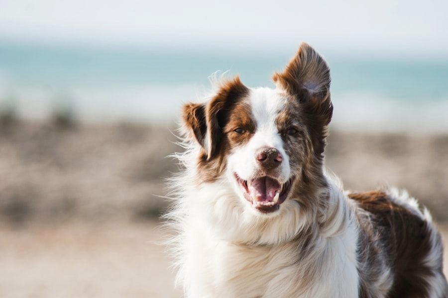

Providing a calm, patient, and personalized walking experience for your furry family members in the heart of our community.

Hello! I'm Sarah. I believe that every dog deserves a walk that matches their unique temperament. Whether your companion is a high-energy explorer or a shy senior, I provide the patience and care they need to feel safe and happy.
With over 5 years of professional experience and a certification in canine behavior, I focus on positive reinforcement and low-stress handling. Your peace of mind is as important as your dog's exercise.
Choose the pace that suits your pup. Every walk includes a personalized report and fresh water.
A stimulating 45-minute walk through local parks. Perfect for active dogs who love to sniff and discover the world around them.
Gentle 20-minute sessions focused on socialisation and soft surfaces. Ideal for growing joints, tiny paws, and big personalities.
One-on-one attention for anxious or senior dogs. A slow, quiet stroll tailored entirely to their needs and comfort level.
Real stories from dog parents in our community.
Sarah has been walking our anxious Lab, Cooper, for months. Her calm energy transformed his walks. He used to pull and bark; now he waits by the door wagging his tail. We couldn't be happier!
Finding a walker who understands puppy needs was so hard until we met Sarah. She is gentle, incredibly patient, and always sends the most beautiful photo updates. Total peace of mind.
My elderly rescue Max has joint issues and Sarah is absolutely wonderful with him. She takes it at his pace and I receive a detailed report every single time. Truly outstanding care.
The live GPS tracking is such a thoughtful addition. I can see exactly where Coco is during her walk. Sarah is professional, punctual, and clearly adores every dog she works with.
Every walk includes a live tracking report. See where your companion explored, when they had water breaks, and get a detailed "Pawsome" summary after every trip.
I offer a complimentary 15-minute "meet & greet" to ensure we're the perfect match for your pup. No obligations — just a friendly chat and a wagging tail.